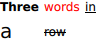

GridLayout QML Type
Provides a way of dynamically arranging items in a grid. More...
| Import Statement: | import QtQuick.Layouts |
| Inherits: |
Properties
- columnSpacing : real
- columns : int
- flow : enumeration
- layoutDirection : enumeration
(since QtQuick.Layouts 1.1) - rowSpacing : real
- rows : int
- uniformCellHeights : bool
(since QtQuick.Layouts 6.6) - uniformCellWidths : bool
(since QtQuick.Layouts 6.6)
Detailed Description
To be able to use this type more efficiently, it is recommended that you understand the general mechanism of the Qt Quick Layouts module. Refer to Qt Quick Layouts Overview for more information.
If the GridLayout is resized, all items in the layout will be rearranged. It is similar to the widget-based QGridLayout. All visible children of the GridLayout element will belong to the layout. If you want a layout with just one row or one column, you can use the RowLayout or ColumnLayout. These offer a bit more convenient API, and improve readability.
By default items will be arranged according to the flow property. The default value of the flow property is GridLayout.LeftToRight.
If the columns property is specified, it will be treated as a maximum limit of how many columns the layout can have, before the auto-positioning wraps back to the beginning of the next row. The columns property is only used when flow is GridLayout.LeftToRight.

GridLayout { id: grid columns: 3 Text { text: "Three"; font.bold: true; } Text { text: "words"; color: "red" } Text { text: "in"; font.underline: true } Text { text: "a"; font.pixelSize: 20 } Text { text: "row"; font.strikeout: true } }
The rows property works in a similar way, but items are auto-positioned vertically. The rows property is only used when flow is GridLayout.TopToBottom.
You can specify which cell you want an item to occupy by setting the Layout.row and Layout.column properties. You can also specify the row span or column span by setting the Layout.rowSpan or Layout.columnSpan properties.
Items in a GridLayout support these attached properties:
- Layout.row
- Layout.column
- Layout.rowSpan
- Layout.columnSpan
- Layout.minimumWidth
- Layout.minimumHeight
- Layout.preferredWidth
- Layout.preferredHeight
- Layout.maximumWidth
- Layout.maximumHeight
- Layout.fillWidth
- Layout.fillHeight
- Layout.alignment
- Layout.margins
- Layout.leftMargin
- Layout.rightMargin
- Layout.topMargin
- Layout.bottomMargin
- Layout.horizontalStretchFactor
- Layout.verticalStretchFactor
Read more about attached properties here.
See also RowLayout, ColumnLayout, StackLayout, Grid, and Qt Quick Layouts Overview.
Property Documentation
columnSpacing : real |
This property holds the spacing between each column. The default value is 5.
columns : int |
This property holds the column limit for items positioned if flow is GridLayout.LeftToRight. The default value is that there is no limit.
flow : enumeration |
This property holds the flow direction of items that does not have an explicit cell position set. It is used together with the columns or rows property, where they specify when flow is reset to the next row or column respectively.
Possible values are:
| Constant | Description |
|---|---|
GridLayout.LeftToRight | (default) Items are positioned next to each other, then wrapped to the next line. |
GridLayout.TopToBottom | Items are positioned next to each other from top to bottom, then wrapped to the next column. |
layoutDirection : enumeration |
This property holds the layout direction of the grid layout - it controls whether items are laid out from left to right or right to left. If Qt.RightToLeft is specified, left-aligned items will be right-aligned and right-aligned items will be left-aligned.
Possible values:
| Constant | Description |
|---|---|
Qt.LeftToRight | (default) Items are laid out from left to right. |
Qt.RightToLeft | Items are laid out from right to left. |
This property was introduced in QtQuick.Layouts 1.1.
See also RowLayout::layoutDirection and ColumnLayout::layoutDirection.
rowSpacing : real |
This property holds the spacing between each row. The default value is 5.
rows : int |
This property holds the row limit for items positioned if flow is GridLayout.TopToBottom. The default value is that there is no limit.
uniformCellHeights : bool |
If this property is set to true, the layout will force all cells to have an uniform Height. The layout aims to respect Layout.minimumHeight, Layout.preferredHeight and Layout.maximumHeight in this mode but might make compromisses to fullfill the requirements of all items.
Default value is false.
Note: This API is considered tech preview and may change or be removed in future versions of Qt.
This property was introduced in QtQuick.Layouts 6.6.
See also GridLayout::uniformCellWidths, RowLayout::uniformCellSizes, and ColumnLayout::uniformCellSizes.
uniformCellWidths : bool |
If this property is set to true, the layout will force all cells to have a uniform width. The layout aims to respect Layout.minimumWidth, Layout.preferredWidth and Layout.maximumWidth in this mode but might make compromisses to fullfill the requirements of all items.
Default value is false.
Note: This API is considered tech preview and may change or be removed in future versions of Qt.
This property was introduced in QtQuick.Layouts 6.6.
See also GridLayout::uniformCellHeights, RowLayout::uniformCellSizes, and ColumnLayout::uniformCellSizes.